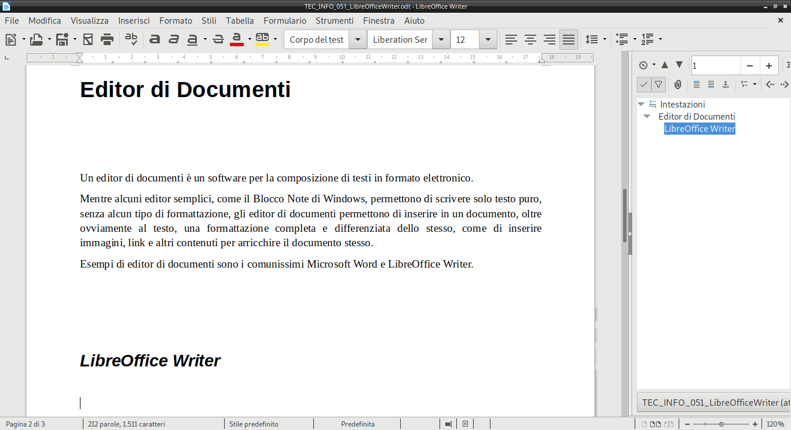
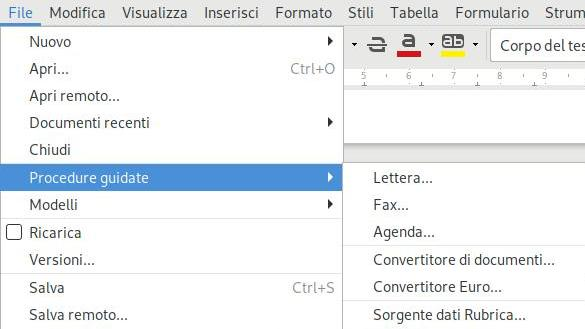
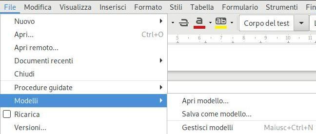
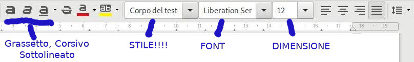
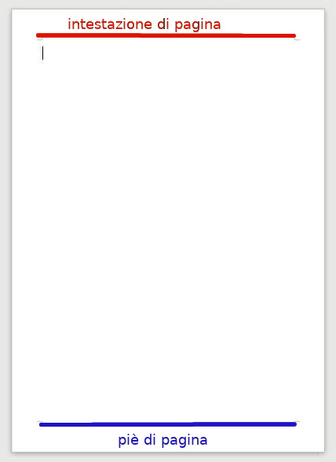
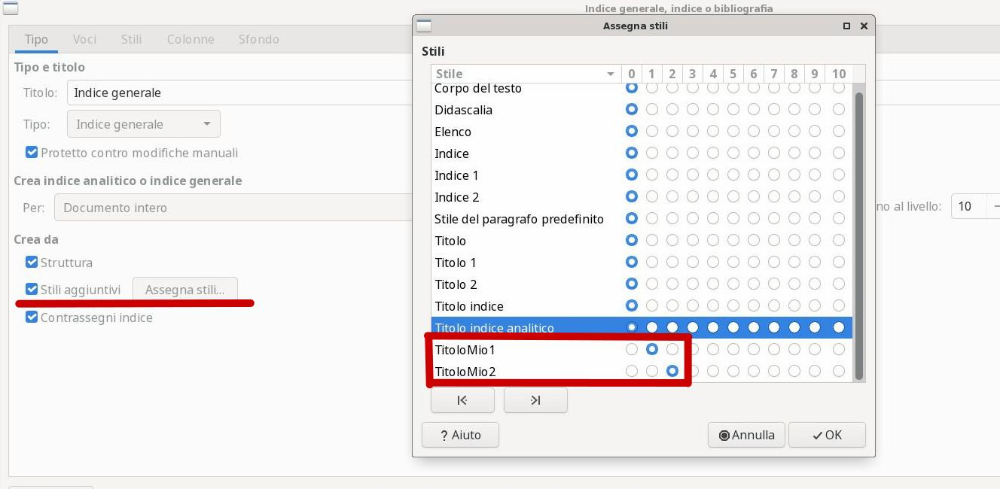

Libreoffice Writer, un Editor di Documenti
Un editor di documenti è un software per la composizione di testi in formato elettronico.
Mentre alcuni editor semplici, come il Blocco Note di Windows, permettono di scrivere solo testo puro, senza alcun tipo di formattazione, gli editor di documenti permettono di inserire in un documento, oltre ovviamente al testo, una formattazione completa e differenziata dello stesso, come di inserire immagini, link e altri contenuti per arricchire il documento stesso.
Esempi di editor di documenti sono i comunissimi Microsoft Word e LibreOffice Writer. Noi qui (lo avrete capito) approcciamo un po' l'editor LibreOffice Writer.

Operazioni di base
Non starò qui a spiegare come si apre, si crea, si salva e si chiude un documento: sono operazioni basilari che dovremmo già aver recepito semplicemente usando qualsiasi tipo di software.
Vorrei solo far notare che Writer, oltre alla possibilità banale di partire da un documento vuoto, ha la possibilità di:
- creare lettere, fax e altro tramite una procedura guidata,

- partire da un modello di base salvato nel PC,

- scaricare un modello gratuito a piacimento dal sito https://extensions.libreoffice.org/templates.
Basta provare ;)
Stili per il testo
Questo capitolo è il più complicato da spiegare di tutto il corso su Writer, perché fa notare delle ovvietà che ai più non sono affatto ovvie. Del resto... chi ha mai studiato come si usa un editor di testo? Cosa ci vuole... basta aprirlo, scrivere e ricordarsi di salvare alla fine!
Se vuoi scrivere un titolo bello grosso, come quello Stili su in alto, basta modificarne il font (il tipo di carattere), la dimensione e metterlo grassetto, giusto?!
No!
Per diventare un titolo bisogna modificarne lo stile! Guardate la figura sotto (è orribile, lo so).

Per ottenere un titolo, bisogna modificarne lo stile da "Corpo del testo" o "Stile predefinito" in "Titolo 1" oppure "Titolo 2"... non basta modificarne font e dimensione!
Ogni titolo del nostro testo deve avere applicato uno degli stile titolo disponibili. Così i paragrafi che compongono un capitolo devono essere tutti di stile "Corpo del testo" oppure uno stile derivato da questi.
Il menù per gli stili
A un certo punto In Writer è comparso addirittura un menù dedicato agli stili per permettere agli utenti di gestire al meglio questo importantissimo aspetto della formattazione dei documenti.
Esagerando un po', si potrebbe dire che, deciso quello che si vuole scrivere, prima di scriverlo nel documento, bisognerebbe decidere come scriverlo, creando e modificando degli stili adatti al layout che vogliamo creare. Infine si passa alla digitazione vera e propria del testo con la semplice applicazione dello stile appropriato sul testo scritto.
Non è semplice, me ne rendo conto. Ma è il modo in cui un utente di buon livello dovrebbe usare un editor avanzato come Writer o Word per la stesura di qualsiasi documento non banale.
Come si crea uno stile, si modifica e si applica ad un documento lo vediamo a lezione.
Gli stili si applicano ad un contesto. E i contesti in un editor di documenti sono solitamente tre:
- Carattere
- Paragrafo
- Pagina
Stili per carattere
Come si fa a scrivere una parola in grassetto sottolineato? Semplice! Si evidenzia la parola e si clicca su uno dei pulsanti sopra. Si possono anche sovrapporre più modifiche, ad esempio:
Questo testo viene scritto in font: "Dejavu Sans", dimensione 14,
corsivo e sottolineato. E la parola testo è barrata.
Quando si seleziona una parola o più, lo stile che vi si applica viene applicato per carattere: ogni carattere della selezione viene modificato secondo quanto stabilito, ogni carattere non selezionato non viene modificato affatto (e quindi mantiene lo stile originale).
E se volessimo avere il controllo di tutti gli stili applicabili ad un carattere???
Seleziona una parola qualsiasi, poi apri il menù FORMATO e scorri fino a CARATTERE: lì trovi tutti gli stili che Writer può applicare ad un carattere.
Stili per paragrafo
Uno stile viene applicato ad un paragrafo quando tutte le parole che fanno parte di quel paragrafo ottengono immediatamente lo stile dello stesso. Qui stiamo dando per scontato che voi sappiate cosa sia un paragrafo... beh... per Writer un paragrafo è quella porzione di informazioni (testo, immagini, tabelle, etc...) compresa fra 2 "invio".
Ognuno degli stili predefiniti come "Titolo 1", "Corpo del testo", etc... sono stili per paragrafo, in questa sua accezione più "estesa".
Se mettete il cursore su un paragrafo, anche senza evidenziare niente, e poi aprite il menù FORMATO e scorrete fino a PARAGRAFO vedrete che ogni modifica che fate lì viene applicata immediatamente a TUTTO il paragrafo!
Stili per pagina
Ormai avrete capito che per modificare lo stile della pagina basta andare sul menù FORMATO e selezionare PAGINA. Lì trovate tutti gli stili che si possono applicare alle pagine del vostro documento, tra cui l'intestazione (di pagina) e il piè di pagina, che vedremo fra poco.
Ricordate solo che ogni modifica allo stile di pagina si applica non alla pagina corrente, ma a tutte le pagine del documento!
Intestazioni e piè di pagina
In Inglese
L'intestazione di pagina si chiama header,
Il piè di pagina si definisce footer.
Continuando l'analogia, il corpo della pagina viene chiamato body

L'intestazione e il piè di pagina sono due aree separate del foglio che si trovano rispettivamente sopra e sotto il corpo centrale della pagina.
Queste due aree appartengono allo stile della pagina e saranno quindi ripetute costantemente in tutte le pagine del documento.
Per inserirle in un documento, seleziona, dal menù INSERISCI, la voce
INTESTAZIONE E PIE' DI PAGINA; poi cliccare dentro ognuna di esse per
inserire informazioni che saranno ripetute in tutto il documento.
Queste zone particolari di ogni pagina sono solitamente costellate di informazioni generiche be definite (ad esempio: il titolo del documento, l'autore, il titolo del capitolo, etc...) oppure informazioni che vengono calcolate in tempo reale (ad esempio: la data di ultima modifica, il numero della pagina, il totale delle pagine, etc...).
Come si gestiscono tutte queste informazioni automatiche è oggetto del prossimo argmento.
Comandi di campo
Un comando di campo è una istruzione che impone a Writer di desumere
un'informazione dal documento stesso e di visualizzarla nel punto ove il
comando viene applicato. Per inserirla nel documento (di solito si usano
nelle intestazioni e nei piè di pagina) selezionare il punto prescelto,
poi dal menù INSERISCI selezionare COMANDO DI CAMPO.
Sono disponibili i seguenti comandi di campo:
- Numero di pagina
- Conteggio pagine
- Data
- Orario
- Titolo
- Primo autore
- Oggetto
Indice Generale e Indice Analitico
Un indice generale è un elenco di tutti i titoli presenti nel nostro documento, in ordine di apparizione e con il numero di pagina vicino. Writer crea l'indice inserendo un collegamento in ognuno dei titoli, in modo tale che "cliccandoci" si possa raggiungere il capitolo corrispondente.
Un indice analitico è un elenco strutturato e ordinato di tutti i capitoli e gli oggetti (immagini, tabelle, note, etc...) presenti nel documento.
Una bibliografia è un elenco di testi, solitamente con un riferimento o un link per ognuno, ordinato secondo la volontà dell'autore. Solitamente la bibliografia di un documento contiene tutte le sue fonti.
Nella nostra trattazione ci occuperemo semplicemente dell'indice generale.
Per inserire un indice generale nel nostro documento, dal menù INSERISCI, aprire
il sottomenù INDICE GENERALE E INDICE ANALITICO, poi selezionare la voce
INDICE GENERALE, ANALITICO O BIBLIOGRAFIA.
Dall'interfaccia che appare, selezionare "Indice Generale" e premere invio. L'indice generale viene creato automaticamente nella posizione selezionata controllando tutti i titoli presenti nel proprio documento.
Attenzione!
Dopo aver creato l'indice generale, questo non si aggiorna automaticamente!!
Dopo aver aggiunto pagine, titoli e/o contenuti devi ritornare sull'indice generale,
cliccare col tasto destro su di esso e dal menù contestuale selezionare AGGIORNA!
Ricordatelo!
Se modifichiamo gli stili dei titoli questi non saranno inseriti automaticamente nell'indice, ma dovranno essere inseriti dall'interfaccia grafica selezionandone il nome ed indicando il livello

Dalla finestra di inserimento indice, mettete la spunta su "stili aggiuntivi", poi dal pulsante "Assegna Stili" andate ad indicare il livello dello stile che avete creato: 1 se volete che il vostro stile sia un Titolo1, 2 se volete un Titolo2, etc...
Inserimento oggetti speciali
In un documento LibreOffice si possono inserire vari tipi di oggetti speciali: immagini, video, grafici business, formule matematiche, forme geometriche e oggetti grafici in genere, cornici, fontwork, etc...
Vediamo l'inserimento di alcuni degli oggetti più comuni
Collegamenti
I collegamenti ipertestuali (i link) si possono assegnare su LibreOffice ad un qualunque oggetto (un testo, una immagine, etc...). Per inserire un collegamento, selezionate prima l'oggetto e poi dal menù INSERISCI scegliete COLLEGAMENTO!
A quel punto dovete solo inserire l'URL di destinazione, ovvero l'indirizzo del sito che volete aprire quando si clicca l'oggetto!
Attenzione!!!
In Writer, click e doppio click selezionano un oggetto!
Per aprire un collegamento fate click su di esso tenendo premuto ++CTRL++ !!!
Tabelle
Le tabelle sono una caratteristica peculiare dei documenti con formattazione: sono molto utili e permettono di organizzare le informazioni con semplicità.
Writer possiede un menù e una toolbar dedicati espressamente alle tabelle. Il menù è qui in alto mentre la toolbar si attiva automaticamente quando si lavora su una tabella...
Tra gli esercizi ce ne sono alcuni espressamente dedicati a lavorare con le tabelle.
Immagini
Inserire un'immagine è molto semplice: dal menù INSERISCI, selezionare IMMAGINE, da qui selezionare il file e premere invio.
Per permettere all'immagine di posizionarsi correttamente secondo il nostro volere bisogna considerare alcune cose:
| Proprietà | Descrizione |
|---|---|
| Ancoraggio | Stabilisce come l'immagine è legata al testo. |
| Scorrimento | Stabilisce il modo in cui il testo scorre sull'immagine e se può attraversarla. |
| Allineamento | Stabilisce l'allineamento dell'immagine rispetto all'ancoraggio. |
| Bordi e distanza dal testo | Sono parametri che si possono modificare dalle proprietà dell'immagine. |
Fontwork
I Fontwork sono font speciali tramite le quali inserire un testo accattivante e molto evidente dei documenti. È una possibilità utilizzata raramente nei documenti e solitamente riservata ai volantini, biglietti di auguri, etc...
Per inserire un fontwork con scritto WRITER, dal menù INSERISCI selezionare FONTWORK; nella finestra che viene aperta selezionare un fontwork fra quelli mostrati.
Nel fontwork inserito (con la scritta di default FONTWORK) fare doppio click e procedere alla modifica del testo da visualizzare. ESC per concludere. Clic sinistro sopra la scritta per attivare i bordi di ridimensionamento. Tutto qui :)
Esercizi
Gli esercizi sono... nel PC del prof. Qui trovate elencati solo il codice dell'esercizio (ad esempio: W01) e gli argomenti su cui esso si basa.
Esercizi W0x
Esercizi con gli stili predefiniti, sommario, intestazione e piè di pagina.
Esercizi W1x
Esercizi con gli stili personali (da creare).
Esercizi W2x
Esercizi con le immagini
Esercizi W3x
Esercizi con le tabelle
Esercizi W4x
Esercizi complessi, contenenti tutte le cose studiate, simili alla verifica.